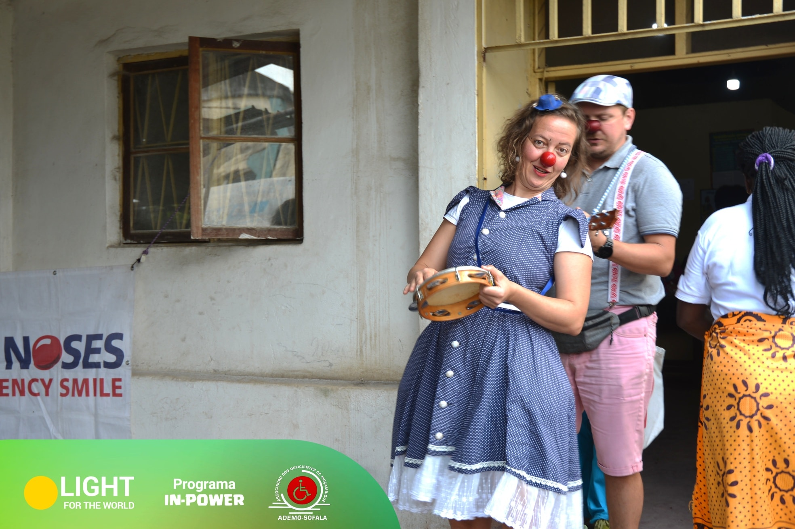

A Arte como Voz.
A Cultura como Transformação.
A ADEMO usa o teatro, a cultura e o turismo inclusivo como ferramentas poderosas de mudança social — levando mensagens de saúde, direitos e dignidade às comunidades mais remotas de Sofala, através da linguagem universal da arte.

Teatro que Ensina a Encontrar
as Próprias Soluções
A ADEMO adoptou o método teatral participativo como ferramenta central de intervenção comunitária. Este método não impõe mensagens de fora para dentro — convida as próprias comunidades a explorar os seus problemas, a representá-los e a descobrir, em conjunto, as soluções que fazem sentido para as suas vidas. É teatro que empodera, não que instrui.
O Que Fazemos:
Da Preparação ao Palco Comunitário
O processo de intervenção cultural da ADEMO é diversificado e integrado — combinando preparação artística rigorosa com impacto comunitário real, desde os ensaios iniciais até aos projectos de autonomia dos grupos.
Ensaios Regulares
Os grupos teatrais da ADEMO ensaiam regularmente — desenvolvendo competências artísticas, trabalhando as mensagens e criando uma coesão de grupo que se reflecte na qualidade dos espectáculos e na confiança dos actores com deficiência.
Apresentações de Espectáculos
Espectáculos apresentados directamente nas comunidades — escolas, mercados, centros comunitários e praças — onde o público encontra o teatro sem barreiras de acesso, físicas ou financeiras.
Workshops e Formação
Workshops de expressão dramática, teatro aplicado e comunicação para membros da comunidade — formando novos actores e expandindo o alcance do método participativo a mais pessoas.
Espectáculos Profissionais
Produção de espectáculos de qualidade profissional com actores com deficiência — desconstruindo o mito de que arte e deficiência são incompatíveis, e abrindo portas a palcos mais exigentes.
Programa Multiplicadores
Dinamização do Programa Multiplicadores — formando animadores culturais nas comunidades para que o impacto do teatro se multiplique mesmo quando a ADEMO não está presencialmente.
Projectos de Autonomia
Facilitação de projectos de autonomia para os grupos teatrais — apoiando a criação de grupos independentes que continuam a missão de transformação cultural sem dependência permanente da ADEMO.
O Palco como Sala de Aula Comunitária
Os grupos teatrais da ADEMO levam mensagens-chave às comunidades mais remotas de Sofala — onde os serviços de saúde e informação raramente chegam. O teatro é o veículo mais eficaz porque envolve, emociona e fica na memória de forma que panfletos e palestras não conseguem.
Saúde e Nutrição
Mensagens sobre nutrição infantil, prevenção de doenças, cuidados maternos e acesso a serviços de saúde — dramatizadas de forma a que toda a comunidade, incluindo pessoas com baixa escolaridade, compreenda e retenha.
WASH — Água e Saneamento
Peças sobre água segura, higiene das mãos, saneamento e gestão de resíduos — especialmente importantes em zonas remotas onde a diarreia e as doenças de veiculação hídrica são ainda causas principais de morte infantil.
Direitos das PcD
Teatro que representa pessoas com deficiência como protagonistas plenos — combatendo estigmas, informando sobre direitos legais e mostrando que a deficiência não define nem limita o que uma pessoa pode ser e fazer.
Género e Igualdade
Peças que questionam normas de género prejudiciais — casamento prematuro, violência doméstica, exclusão da mulher da tomada de decisão — criando espaço para reflexão colectiva e mudança cultural gradual.
Formamos Quem Forma:
O Impacto que se Multiplica
O Programa Multiplicadores é a garantia de que o impacto do teatro comunitário da ADEMO não depende da presença permanente da organização. Formamos animadores culturais e líderes comunitários que passam a usar as ferramentas do teatro participativo de forma autónoma — multiplicando as mensagens para muito além do que a ADEMO sozinha alcançaria.


Turismo que Inclui,
Empodera e Conserva
A ADEMO promove um turismo inclusivo que fortalece a identidade cultural de Sofala, empodera pessoas com deficiência e outros grupos vulneráveis como agentes activos do sector turístico, e integra práticas sustentáveis de conservação ambiental. O turismo não é apenas uma actividade económica — é uma afirmação de identidade e pertença.
Arte que Sobrevive e Cresce por Si Própria
A ADEMO não quer grupos teatrais dependentes para sempre. O nosso objectivo é criar condições para que cada grupo alcance plena autonomia artística, financeira e organizacional — tornando-se agentes culturais independentes que continuam a transformar as suas comunidades.
Autonomia Artística
Cada grupo aprende a criar as suas próprias peças, baseadas nos problemas reais da sua comunidade — com a sua própria linguagem, personagens e contexto. A ADEMO fornece as ferramentas; a arte pertence ao grupo.
Autonomia Financeira
Apoiamos os grupos a desenvolver modelos de sustentabilidade — desde apresentações pagas e workshops remunerados até parcerias com municípios e organizações que valorizam o teatro comunitário.
Autonomia Organizacional
Formação em gestão de grupos culturais, planeamento de actividades e comunicação — para que cada grupo possa funcionar como uma organização cultural séria, independente e com visão de futuro.
Teatro & Cultura em Números
desde 2019
nas comunidades
com presença activa
criados
O Teatro que Mudou Algo em Mim
Nunca tinha visto teatro na minha aldeia. Quando vi o espectáculo da ADEMO sobre os direitos das pessoas com deficiência, pela primeira vez senti que havia algo a dizer sobre mim — e que eu tinha o direito de dizer. Depois do espectáculo, falei com a minha família pela primeira vez sobre o que precisava.
Faço parte do grupo teatral há três anos. Antes tinha vergonha de falar em público porque uso cadeira de rodas e achava que as pessoas não me levavam a sério. O teatro ensinou-me que a minha voz tem peso — no palco e na vida. Agora sou eu que formo os novos actores.
O espectáculo sobre a água e a higiene que a ADEMO fez no bairro mudou o comportamento das pessoas mais do que anos de campanhas de saúde. As mães passaram a lavar as mãos porque viram os filhos a morrer no palco. Isso fica. Os folhetos não ficam.
Teatro & Cultura em Imagens


Cada Espectáculo é uma Semente.
Ajude-nos a Plantá-la.
Com o seu apoio, chegamos a mais comunidades, formamos mais multiplicadores, produzimos mais espectáculos e construímos um turismo inclusivo que coloca pessoas com deficiência no centro — como artistas, guias, empreendedores e protagonistas da sua própria história.